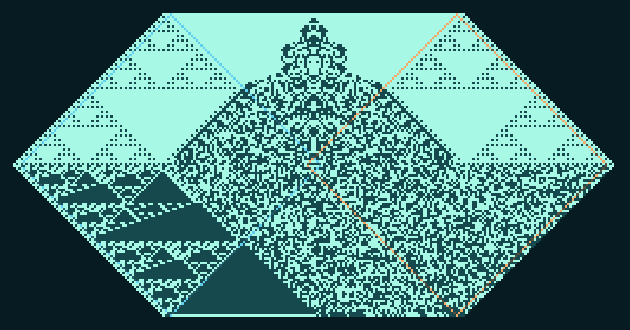
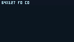
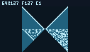
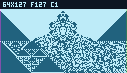
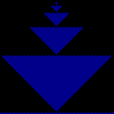
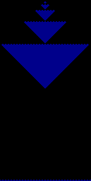
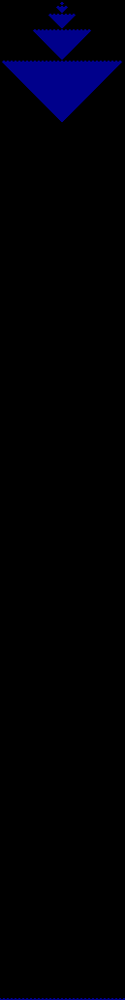
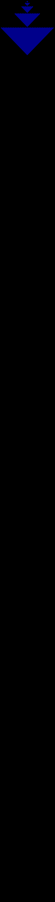
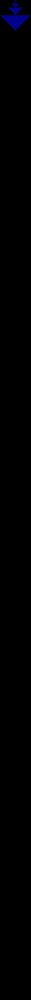

Ромбовые построения
По десять разных кадров и палитр на вид. В коллекции есть поля XOR и AND, склейки, квадратная проекция, Ромб-монета и ромбовые виды Хаба.

Как узоры «Зеркалиуса» становятся кадрами, обоями и иллюстрациями.
По десять разных кадров и палитр на вид. В коллекции есть поля XOR и AND, склейки, квадратная проекция, Ромб-монета и ромбовые виды Хаба.

На кадрах R оба ромба меняют направление. Контуры становятся золотыми, а кадр задерживается. В атласе собраны симметричные фигуры из кадров до касания, в момент разворота и после него.

Высота поля · 8 · 16 · 32 · 64 · 128 · 256 · 512 · 1024 · 2048 · 4096
Десять GIF с кадрами разгона, цикла и возврата. Для 8–128 строк выборка охватывает весь цикл. Для 256–4096 показаны рассчитанные кадры в начале и перед доказанным возвратом.
Высота поля · 8 · 16 · 32 · 64 · 128 · 256 · 512 · 1024 · 2048 · 4096
Все GIF в Битотеке · Атлас фигур · Видео на 1024 строки.

Две вырезки из поля 2N−1. Совпадающие ромбы показываются одной фигурой.
64 строки · до цикла64 строки · цикл
Движущиеся центральные оси и симметричные фигуры, которые их пересекают, окрашены на каждом кадре.
64 строки · до цикла64 строки · циклКадры, GIF и видеомонтажи из Маятника.
Загрузка кадров…
Художественная обработка фигуры из кадра 16. Жёлтые клетки переданы матовым серебром, синие — тёмной эмалью. Модель сохранила вытянутый силуэт и округлила часть ступенчатых деталей.
Точный пиксельный исходник · 59 × 160.
Атлас 512 Промпт ПараметрыЧетыре фигуры из ранних кадров записи центральной оси. Все четыре пересекают границы прежних вырезок. На листе фигуры увеличены по пикселям, а под ним лежат отдельные PNG в исходном размере.

016 · кадр 7 028 · кадр 12 035 · кадр 16 036 · кадр 16 Атлас всех размеров
Запись поля на 512 строк содержит 194 кадра GIF размером 537 × 413 пикселей. В 11 полосах покадрового индекса сохранено 1 119 разных вырезок. Атлас целых фигур содержит 269 фигур и 300 вхождений по всем кадрам.
В Маятнике откройте Битотеку → Шаблоны → 512 → Атлас. В папке 1024 → Атлас доступны 2 311 вставляемых фигур из расчёта на поле 3 070 × 1 024 клетки. Ещё 536 доступны в каталоге крупных фигур, весь набор содержит 2 847 фигур.
Как открыть атласы Крупные фигуры атласа 1024 Исходная анимация Покадровый индекс Координаты четырёх фигур
Три фигуры с центральной оси Маятника. Рядом с каждой иллюстрацией — вырезка из исходной анимации, увеличенная по пикселям. GPT Image 2 передал формы в дереве, камне и меди.

От центрального ствола отходят две поднятые ветви. Тёмный орех подчёркивает их ступенчатый рисунок.
 Исходная анимация
Промпт
Исходная анимация
Промпт

Плотная фигура вытянута по оси. Мелкие сколы и боковой свет выделяют грани базальта.
Исходная анимация
Промпт

Широкие боковые выступы и просветы читаются в чеканной меди с тёмной патиной.
Исходная анимация
Промпт
Одиннадцать фрагментов последнего кадра GIF, сверху вниз. Разделил фигуры по сужениям оси. Справа от каждой иллюстрации видна точная пиксельная вырезка.


Резное дерево · строки 0–31
Промпт
Чеканная медь · строки 32–82
Промпт
Тёмный камень · строки 83–103
Промпт
Тёмный камень · строки 104–176
Промпт
Чеканная медь · строки 177–200
Промпт
Резное дерево · строки 201–244
Промпт
Чеканная медь · строки 245–284
Промпт
Тёмный камень · строки 285–308
Промпт
Резное дерево · строки 309–338
Промпт
Чеканная медь · строки 339–379
Промпт
Тёмный камень · строки 380–412 · обрезан краем GIF
ПромптВсе вырезки по порядку Исходная анимация Координаты в кадре GIF Покадровый индекс · 194 кадра
На красных вертикалях кадров 30 и 42 повторяются фигуры, похожие на резные тотемы. Обе иллюстрации сделаны через GPT Image 2 по исходным кадрам Маятника на 512 строках.

Цепочки красных фигур тянутся от вершины к синим треугольникам. Золотые клетки стали рельефом вокруг эмали.
Исходный кадр 30 Построить в Маятнике Промпт
Светлые клетки превратились в тонкие линии гравировки. Тотемы повторяются на центральной оси и в боковых рядах.
Исходный кадр 42 Построить в Маятнике ПромптЦентральная ось собирает касающиеся её фигуры в выбранный набор. При смене кадра автонабор обновляется по новому рисунку; ручные шаблоны остаются на поле.
Светлый узор и бирюзовые детали на глубоком синем фоне. Рисунок крупнее; исходные состояния и ритм сохранены. Full HD · 3:04 · без звука.
Смотреть на YouTube Скачать MP4 · 6,9 МБ Исходник и палитра
GIF · 537 × 413 пикселей · 194 кадра · 183,61 с.
Открыть анимациюНа чёрном фоне показаны фигуры из банка шаблонов, касающиеся центрального столбца. GIF сохраняют полную высоту поля и полосу из 129 клеток вокруг оси. Длинные записи можно прокручивать.

32 кадра · шаг 4
Скачать GIF Открыть начало в Маятнике
64 кадра · шаг 4
Скачать GIF Открыть начало в Маятнике
256 кадров · шаг 4
Скачать GIF Открыть начало в Маятнике
512 кадров · шаг 4
Скачать GIF Открыть начало в Маятнике
1024 кадра · шаг 4
Скачать GIF Открыть начало в МаятникеВ Маятнике откройте «Ручные оси → Ось центр» и включите ▦ в пульте под полем. На каждом готовом кадре кнопка заново выделяет касающиеся оси фигуры по текущему правилу «Область». Если включены 1 / 0 этой оси, набор получает её раскраску. «В библиотеку» сохраняет текущий выбор одним сборным шаблоном с возможностью разбора. Повторное нажатие ▦ останавливает обновление и оставляет последний набор редактируемыми копиями.
Открыть МаятникШаблоны и центральная ось в инструкцииСборный шаблон
Бирюзой, янтарём и сиреневым отмечены области, которых касается вертикаль, горизонталь или диагональ. Во всех трёх вариантах исходное поле одно и то же.


Открой кадр 64 на 1024 строках. Включи «Треуг» и поставь ось. В раскраске выбери «Область → По сторонам». Для нулей и единиц используй кнопки «0» и «1». В серии вертикаль проходит по центру, горизонталь — по строке с индексом 640, диагональ пересекает их под 45°.
Цвета предложены через OpenAI API. Области рассчитаны средствами Маятника. Для нулей использован более тёмный оттенок той же палитры.
Кадры 4, 64, 176 и 508 в медной палитре. От кадра к кадру одни треугольники заполняются, другие остаются видны. Вершина и основание доходят до краёв изображения.
Задай 1024 строки и 512 вершин. В «Построении» выбери «ЛевПрав», в «Полях» — «Маятник». Включи вид «Треуг». Ссылка под изображением открывает нужный кадр с выбранной раскраской, «Шрна по Оси» и «Верх».
#4a2859, единица #ffbf6e.#19494e, единица #71efda.PNG 2048 × 1024 сохраняют один пиксель на клетку. В медной и бирюзовой версиях под полем лежит графитовая текстура, созданная в Image API. Фактура видна в PNG.
Ряды золотых треугольников на чёрном. Рисунок взят из поля «Всё поле 5.8», а шаг 4511 подобран по пользовательскому снимку Хаба.

В Хабе открой «Сравнение», выбери XOR, оставь поле 3 (5.8), включи «Прямо» и «Рост». В обоях единицы окрашены в #e5a051. Вариант 4K заполняет экран по высоте и обрезан по бокам.
Зеркало, кодовая волна и ромбы стали отправными точками для GPT Image 2. Композиции, освещение и фактура созданы по текстовым описаниям.

Зеркальный маятник подсказал вертикальный стык, по сторонам которого расходятся цветные клетки.
Открыть зеркало
Из Аниматрицы Code взято движение волны слева направо. В иллюстрации оно передано светящимся фронтом.
Источник в Code Расчётные кадры
Ромбические укладки из обоев «Зеркалиуса» переработаны в крупные цветные грани.
Исходные мотивы